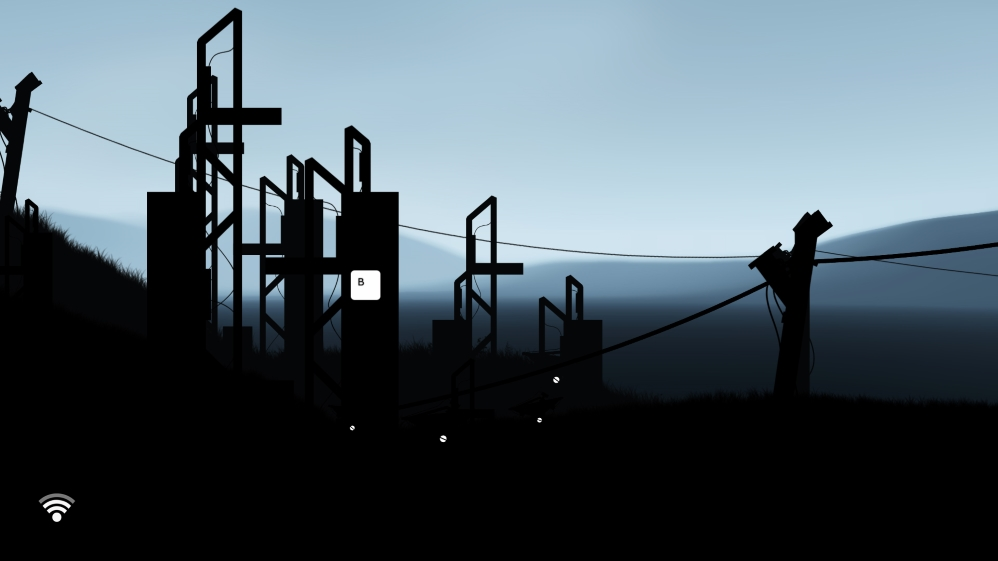
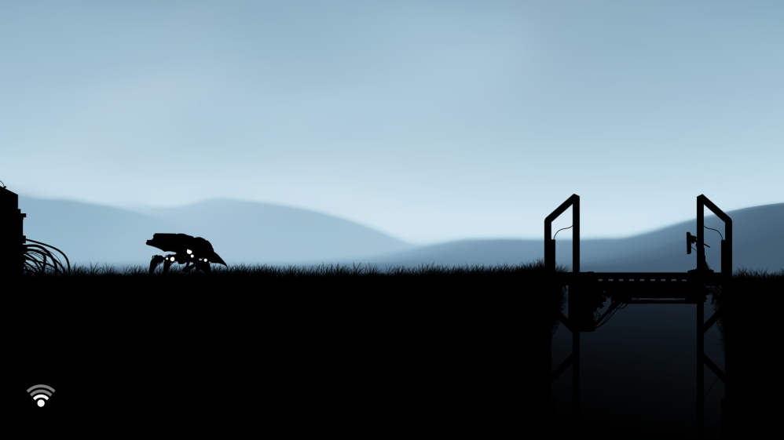

Почнемо. Якось я блукав просторами Steam і наштовхнувся на цю гру. Почитав відгуки і зрозумів що вона доволі коротка. Деякі гравці писали щось на кшталт "що це взагалі за гра така". Подивився на ціну і зрозумів, що треба брати бо вона безкоштовна.

Пограти в неї я вирішив, бо вгледів потенціал у тому, що побачив на скріншотах. Виглядала вона таємниче і пост-апокаліптично - саме те що я іноді люблю пограти. Опис також доволі таемничий: "Машина розмірковує про свою замотність. Сканує радіо сигнал шукаючи відповідь на свої питання". Тож я вирішив допомогти тій машині знайти відповідь.

Це виявилось складніше ніж я уявляв… По-перше, гра нічого не пояснює. Взагалі нічого. Ти просто запускаєш її і намагаєшся зрозуміти як грати. Це як пазл у пазлі. Для того щоб його розгадати треба прислухатися, тому якщо вирішите пограти одягайте навушники. Слухайте і міркуйте як та сама машина, про яку пишуть в описі.
Підписуйтесь на мою кураторську сторінку і якщо я знайду іншу незрозумліу але цікаву гру то обов'язково розповім про неї.
Реклама